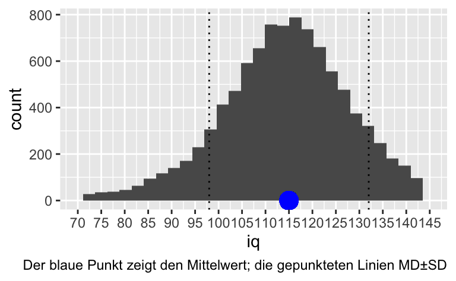
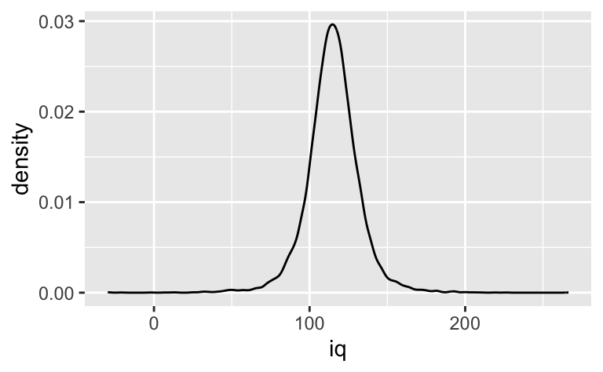
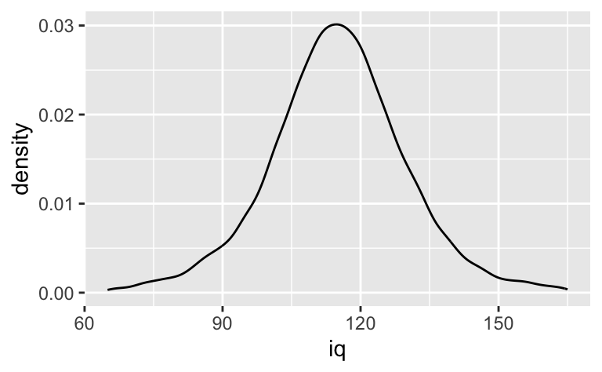

pnorm(q = 115, mean = 100, sd = 15)[1] 0.8413447Intelligenz von Studentis
Eine Psychologin möchte die Intelligenz von Studentis bestimmen: Was ist wohl der Mittelwert? Wie schlau sind die schlausten 10%? Von wo bis wo geht das mittlere 90%-Intervall von IQ-Werten? Natürlich ist ihr klar, dass es nicht reicht, einen Mittelwert zu schätzen. Nein, sie will alles, sprich: die Posteriori-Verteilung.
Zuerst überlegt sie sich die Prioris: “Was ist meine Einschätzung zur Intelligenz von Studentis?”. Dazu liest sie alle verfügbare Literatur, beurteilt die methodische Qualität jeder einzelnen Studie und spricht mit den Expertis. Auf dieser Basis kommt sie zu folgenden Prioris:
\[\mu \sim \mathcal{N}(115, 5)\] Ein paar Überlegungen, die unsere Psychologin dazu hatte: Die Studentis sind im Mittel schlauer als die Normalbevölkerung. Um ein Gefühl für die Verteilungsfunktion vom IQ zu bekommen, nutzt sie folgenden R-Befehl:
pnorm(q = 115, mean = 100, sd = 15)[1] 0.8413447Dieser Befehl gibt ihr an, welcher Prozentsatz der allgemeinen Bevölkerung (die Wahrscheinlichkeitsmasse) nicht schlauer ist als 115.
Dann versucht sie ein Gefühl für die Streuung (\(\sigma\)) zu bekommen, folgender R-Befehl hilft ihr:
q_iq <- 50
rate_lambda <- 0.1
pexp(q = q_iq, rate = rate_lambda)[1] 0.9932621Ah! Nimmt man an, dass Sigma exponentialverteilt ist mit einer Rate von 0.1, dass sind etwa 99 Prozent der Leute nicht mehr als q_iq IQ-Punkte vom Mittelwert \(\mu\) entfernt. Das deckt sich mit ihren Informationen aus der Literatur.
Damit sind die Priors spezifiziert.
Augaben:
\[\mu \sim \mathcal{N}(115, 5)\]
\[\sigma \sim \mathcal{E}(0.1)\]
Ziehen wir Zufallszahlen entsprechend der Priori-Werte:
library(tidyverse)
n <- 1e4
sim <-
tibble(
sample_mu = rnorm(n,
mean = 115,
sd = 10
),
sample_sigma = rexp(n,
rate = 0.1
),
iq = rnorm(n,
mean = sample_mu,
sd = sample_sigma
)
)Was ist wohl der Mittelwert und die SD dieser Priori-Prädiktiv-Verteilung?
height_sim_sd <-
sd(sim$iq) %>% round()
height_sim_sd[1] 17height_sim_mean <-
mean(sim$iq) %>% round()
height_sim_mean[1] 115Und jetzt plotten wir diese Verteilung:
sim %>%
ggplot() +
aes(x = iq) +
geom_histogram() +
geom_point(
y = 0, x = height_sim_mean, size = 5,
color = "blue", alpha = .5
) +
geom_vline(
xintercept = c(
height_sim_mean + height_sim_sd,
height_sim_mean - height_sim_sd
),
linetype = "dotted"
) +
labs(caption = "Der blaue Punkt zeigt den Mittelwert; die gepunkteten Linien MD±SD") +
scale_x_continuous(
limits = c(70, 145),
breaks = seq(70, 145, by = 5)
)
Oder vielleicht besser als Dichte-Diagramm, das zeigt das “Big Picture” vielleicht besser:
sim %>%
ggplot() +
aes(x = iq) +
geom_density()
Hm, etwas randlastig die Verteilung.
Zoomen wir etwas mehr rein:
sim %>%
ggplot() +
aes(x = iq) +
geom_density() +
scale_x_continuous(limits = c(65, 165))
Was ist der Mittelwert und die SD und die üblichen deskriptiven Kennwerte?
library(easystats)sim %>%
select(iq) %>%
describe_distribution()| Variable | Mean | SD | IQR | Min | Max | Skewness | Kurtosis | n | n_Missing |
|---|---|---|---|---|---|---|---|---|---|
| iq | 114.8922 | 17.17278 | 18.36231 | -29.69294 | 266.3775 | -0.1810892 | 5.306782 | 10000 | 0 |
In welchem Bereich liegen die mittleren 95% der IQ-Werte?
sim %>%
eti()| Parameter | CI | CI_low | CI_high |
|---|---|---|---|
| sample_mu | 0.95 | 94.9528996 | 135.22082 |
| sample_sigma | 0.95 | 0.2275467 | 36.61268 |
| iq | 0.95 | 80.7942858 | 148.62806 |
Alternativ könnten wir in z-transformierten Daten denken:
sim2 <-
tibble(
sample_mu =
rnorm(n,
mean = 0,
sd = 1
),
sample_sigma =
rexp(n,
rate = 1
)
) %>%
mutate(
iq =
rnorm(n,
mean = sample_mu,
sd = sample_sigma
)
)sim2 %>%
ggplot() +
aes(x = iq) +
geom_density()
Categories: